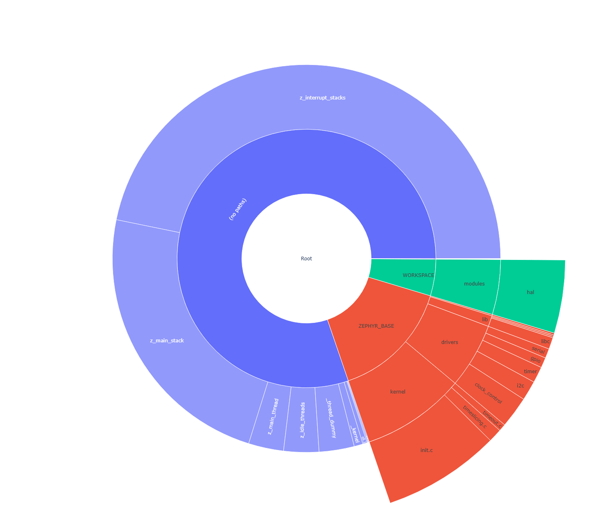
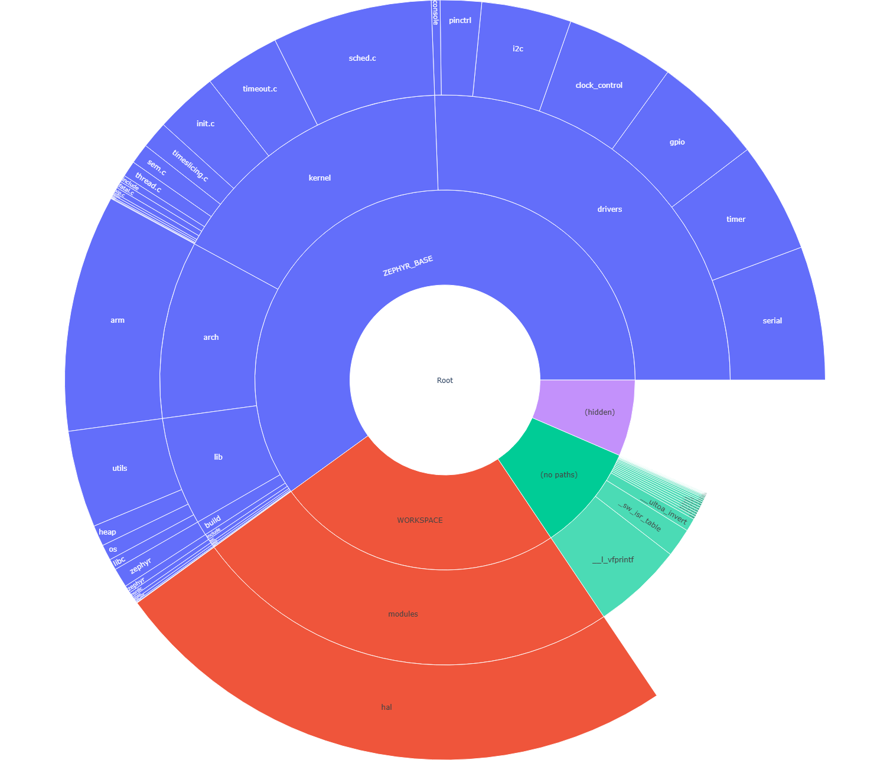

优化工具
借助现有的优化工具，可以使用不同的构建系统目标分析 资源占用与内存使用 和 数据结构。还可以生成 HTML 仪表板，以更动态的方式查看构建产物和指标。
资源占用与内存使用
构建系统提供 3 个目标，用于查看和分析生成镜像中的 RAM、ROM 和栈使用情况。这些工具基于最终镜像运行，提供 RAM 和 ROM 中所用符号和代码的大小信息。此外，借助编译器提供的特性，还可以生成最坏情况下的栈使用分析。
本节提到的某些工具会按照符号的物理组织方式组织输出。由于某些符号可能位于项目的目录树结构之外，或者缺少按名称显示所需的元数据，因此使用以下顶层容器对这类符号进行分组：
Hidden：RAM 和 ROM 报告会在 Hidden 类别中列出所有没有匹配映射文件的已处理符号。
这表示所列符号对应的文件未被添加到元数据文件中、为空或未定义。工具既无法获得该符号对应的函数名，也无法确定其来源。
No paths：RAM 和 ROM 报告会在 No paths 类别中列出所有带相对路径的已处理符号。
这表示所列符号无法放到报告树结构中某个特定文件下的绝对路径处。工具能够获得函数名，但无法确定其来源。
备注
同一个函数可能出现多次，No paths 类别会把它们的总和列为一个条目。
构建目标：ram_report
以表格形式列出所有已编译对象及其 RAM 使用情况，包括每个符号的字节数及其所占百分比。数据按对象在源码树中的文件系统位置以及包含该符号的文件进行分组。
针对你的开发板使用 ram_report 目标，如下例所示。如果使用 Sysbuild（系统构建），请改为参阅 镜像专用构建目标。
使用 west：
# From the root of the zephyr repository
west build -b reel_board samples/hello_world
west build -t ram_report
使用 CMake 和 ninja：
# From the root of the zephyr repository
# Use cmake to configure a Ninja-based buildsystem:
cmake -Bbuild -GNinja -DBOARD=reel_board samples/hello_world
# Now run the build tool on the generated build system:
ninja -Cbuild ram_report
这些命令会生成类似下面的输出:
Path Size % Address
========================================================================================
Root 4637 100.00% -
├── (hidden) 4 0.09% -
├── (no paths) 2748 59.26% -
│ ├── _cpus_active 4 0.09% 0x20000314
│ ├── _kernel 32 0.69% 0x20000318
│ ├── _sw_isr_table 384 8.28% 0x00006474
│ ├── cli.1 16 0.35% 0x20000254
│ ├── on.2 4 0.09% 0x20000264
│ ├── poll_out_lock.0 4 0.09% 0x200002d4
│ ├── z_idle_threads 128 2.76% 0x20000120
│ ├── z_interrupt_stacks 2048 44.17% 0x20000360
│ └── z_main_thread 128 2.76% 0x200001a0
├── WORKSPACE 184 3.97% -
│ └── modules 184 3.97% -
│ └── hal 184 3.97% -
│ └── nordic 184 3.97% -
│ └── nrfx 184 3.97% -
│ └── drivers 184 3.97% -
│ └── src 184 3.97% -
│ ├── nrfx_clock.c 8 0.17% -
│ │ └── m_clock_cb 8 0.17% 0x200002e4
│ ├── nrfx_gpiote.c 132 2.85% -
│ │ └── m_cb 132 2.85% 0x20000060
│ ├── nrfx_ppi.c 4 0.09% -
│ │ └── m_channels_allocated 4 0.09% 0x200000e4
│ └── nrfx_twim.c 40 0.86% -
│ └── m_cb 40 0.86% 0x200002ec
└── ZEPHYR_BASE 1701 36.68% -
├── arch 5 0.11% -
│ └── arm 5 0.11% -
│ └── core 5 0.11% -
│ ├── mpu 1 0.02% -
│ │ └── arm_mpu.c 1 0.02% -
│ │ └── static_regions_num 1 0.02% 0x20000348
│ └── tls.c 4 0.09% -
│ └── z_arm_tls_ptr 4 0.09% 0x20000240
├── drivers 258 5.56% -
│ ├── ... ... ...%
========================================================================================
4637
构建目标：rom_report
以表格形式列出所有已编译对象及其 ROM 使用情况，包括每个符号的字节数及其所占百分比。数据按对象在源码树中的文件系统位置以及包含该符号的文件进行分组。
针对你的开发板使用 rom_report 目标，如下例所示。如果使用 Sysbuild（系统构建），请改为参阅 镜像专用构建目标。
使用 west：
# From the root of the zephyr repository
west build -b reel_board samples/hello_world
west build -t rom_report
使用 CMake 和 ninja：
# From the root of the zephyr repository
# Use cmake to configure a Ninja-based buildsystem:
cmake -Bbuild -GNinja -DBOARD=reel_board samples/hello_world
# Now run the build tool on the generated build system:
ninja -Cbuild rom_report
这些命令会生成类似下面的输出:
Path Size % Address
========================================================================================
Root 27828 100.00% -
├── ... ... ...%
└── ZEPHYR_BASE 13558 48.72% -
├── arch 1766 6.35% -
│ └── arm 1766 6.35% -
│ └── core 1766 6.35% -
│ ├── cortex_m 1020 3.67% -
│ │ ├── fault.c 620 2.23% -
│ │ │ ├── bus_fault.constprop.0 108 0.39% 0x00000749
│ │ │ ├── mem_manage_fault.constprop.0 120 0.43% 0x000007b5
│ │ │ ├── usage_fault.constprop.0 84 0.30% 0x000006f5
│ │ │ ├── z_arm_fault 292 1.05% 0x0000082d
│ │ │ └── z_arm_fault_init 16 0.06% 0x00000951
│ │ ├── ... ... ...%
├── boards 32 0.11% -
│ └── arm 32 0.11% -
│ └── reel_board 32 0.11% -
│ └── board.c 32 0.11% -
│ ├── __init_board_reel_board_init 8 0.03% 0x000063e4
│ └── board_reel_board_init 24 0.09% 0x00000ed5
├── build 194 0.70% -
│ └── zephyr 194 0.70% -
│ ├── isr_tables.c 192 0.69% -
│ │ └── _irq_vector_table 192 0.69% 0x00000040
│ └── misc 2 0.01% -
│ └── generated 2 0.01% -
│ └── configs.c 2 0.01% -
│ └── _ConfigAbsSyms 2 0.01% 0x00005945
├── drivers 6282 22.57% -
│ ├── ... ... ...%
========================================================================================
21652
构建目标：ram_plot/rom_plot
与 ram_report 和 rom_report 构建目标类似，这些目标以旭日图的形式生成可视化的内存使用报告。用户可以点击各扇区浏览目录结构，并将鼠标悬停在扇区上查看更多详细信息。
运行这些目标时，会先生成命令行报告，然后打开一个浏览器窗口。
使用 west：
# From the root of the zephyr repository
west build -b reel_board samples/hello_world
west build -t ram_plot
使用 CMake 和 ninja：
# From the root of the zephyr repository
# Use cmake to configure a Ninja-based buildsystem:
cmake -Bbuild -GNinja -DBOARD=reel_board samples/hello_world
# Now run the build tool on the generated build system:
ninja -Cbuild ram_plot

ROM 使用情况也是如此。
使用 west：
# From the root of the zephyr repository
west build -b reel_board samples/hello_world
west build -t rom_plot
使用 CMake 和 ninja：
# From the root of the zephyr repository
# Use cmake to configure a Ninja-based buildsystem:
cmake -Bbuild -GNinja -DBOARD=reel_board samples/hello_world
# Now run the build tool on the generated build system:
ninja -Cbuild rom_plot

构建目标：puncover
该目标使用一个名为 puncover 的第三方工具，可在 https://github.com/HBehrens/puncover 找到。构建该目标时，会启动一个本地 Web 服务器，你可以打开 Web 客户端浏览文件，并查看它们的 ROM、RAM 和栈使用情况。
使用该目标之前，请安装 puncover Python 模块:
pip3 install --user puncover
警告
这是一个第三方工具，任何时候都可能能用也可能不能用。请查看 GitHub issue，并将新问题报告给该项目的维护者。
安装该 Python 模块后，针对你的开发板使用 puncover 目标，如下例所示。如果使用 Sysbuild（系统构建），请改为参阅 镜像专用构建目标。
使用 west：
# From the root of the zephyr repository
west build -b reel_board samples/hello_world
west build -t puncover
使用 CMake 和 ninja：
# From the root of the zephyr repository
# Use cmake to configure a Ninja-based buildsystem:
cmake -Bbuild -GNinja -DBOARD=reel_board samples/hello_world
# Now run the build tool on the generated build system:
ninja -Cbuild puncover
puncover 目标默认会在 localhost:5000 上启动本地 Web 服务器。可以通过设置环境变量 PUNCOVER_HOST 和 PUNCOVER_PORT 更改 HTTP 服务器运行的主机 IP 和端口。可以在 EXTRA_PUNCOVER_ARGS 中定义传给 puncover 的其他参数。
要在交互式 Web 应用中查看最坏情况下的栈使用分析，请在启用 CONFIG_STACK_USAGE 的情况下构建。
使用 west：
# From the root of the zephyr repository
west build -b reel_board samples/hello_world -- -DCONFIG_STACK_USAGE=y -DCONFIG_CALLGRAPH_INFO=y
west build -t puncover
使用 CMake 和 ninja：
# From the root of the zephyr repository
# Use cmake to configure a Ninja-based buildsystem:
cmake -Bbuild -GNinja -DBOARD=reel_board -DCONFIG_STACK_USAGE=y -DCONFIG_CALLGRAPH_INFO=y samples/hello_world
# Now run the build tool on the generated build system:
ninja -Cbuild puncover
如果想在不启动 Web 应用的情况下获得一份关于所发现的最坏情况栈使用量的 JSON 报告，可以添加选项 --generate-report --non-interactive --report-type json 进行非交互式使用。并将你关心的所有函数逐个以 --report-max-static-stack-usage FUNCTION_NAME:::MAXIMAL_STACK_SIZE 形式的参数加入报告。例如，要导出 log_process_thread_func、shell_thread、bg_thread_main 和 work_queue_main，命令如下：
使用 west：
# From the root of the zephyr repository
west build -b reel_board samples/hello_world -- -DCONFIG_STACK_USAGE=y -DCONFIG_CALLGRAPH_INFO=y -DEXTRA_PUNCOVER_ARGS="--generate-report;--non-interactive;--report-type;json;--report-max-static-stack-usage;log_process_thread_func:::832;--report-max-static-stack-usage;shell_thread:::4160;--report-max-static-stack-usage;bg_thread_main:::2112;--report-max-static-stack-usage;work_queue_main:::1088;--report-filename;$PWD/report"
west build -t puncover
使用 CMake 和 ninja：
# From the root of the zephyr repository
# Use cmake to configure a Ninja-based buildsystem:
cmake -Bbuild -GNinja -DBOARD=reel_board -DCONFIG_STACK_USAGE=y -DCONFIG_CALLGRAPH_INFO=y -DEXTRA_PUNCOVER_ARGS="--generate-report;--non-interactive;--report-type;json;--report-max-static-stack-usage;log_process_thread_func:::832;--report-max-static-stack-usage;shell_thread:::4160;--report-max-static-stack-usage;bg_thread_main:::2112;--report-max-static-stack-usage;work_queue_main:::1088;--report-filename;$PWD/report" samples/hello_world
# Now run the build tool on the generated build system:
ninja -Cbuild puncover
为了便于维护和总览，也可以把所有参数放到一个 yaml 配置文件中：
elf_file: ~/zephyrproject/zephyr/samples/net/mqtt_publisher/build/zephyr/zephyr.elf
gcc-tools-base: ~/zephyr-sdk-1.0.1/gnu/arm-zephyr-eabi/bin/arm-zephyr-eabi-
src_root: ~/zephyrproject/zephyr
build_dir: ~/zephyrproject/zephyr/samples/net/mqtt_publisher/build
generate-report: true
non-interactive: true
report-type: json
report-max-static-stack-usage:
- log_process_thread_func:::832
- shell_thread:::4160
- bg_thread_main:::2112
- work_queue_main:::1088
- mgmt_event_work_handler:::896
使用 west：
# From the root of the zephyr repository
west build -b reel_board samples/hello_world -- -DCONFIG_STACK_USAGE=y -DCONFIG_CALLGRAPH_INFO=y -DEXTRA_PUNCOVER_ARGS="-c puncover_config.yaml"
west build -t puncover
使用 CMake 和 ninja：
# From the root of the zephyr repository
# Use cmake to configure a Ninja-based buildsystem:
cmake -Bbuild -GNinja -DBOARD=reel_board -DCONFIG_STACK_USAGE=y -DCONFIG_CALLGRAPH_INFO=y -DEXTRA_PUNCOVER_ARGS="-c puncover_config.yaml" samples/hello_world
# Now run the build tool on the generated build system:
ninja -Cbuild puncover
数据结构
构建目标：pahole
Poke-a-hole（pahole）是一个目标文件分析工具，用于查看数据结构的大小，以及编译器为将数据元素按 CPU 字长对齐而产生的空洞。
使用该目标之前必须安装 Poke-a-hole（pahole）。可以从 https://git.kernel.org/pub/scm/devel/pahole/pahole.git 获取，在 fedora 和 ubuntu 中都包含在 dwarves 软件包里:
sudo apt-get install dwarves
也可以从 fedora 获取:
sudo dnf install dwarves
安装该软件包后，针对你的开发板使用 pahole 目标，如下例所示。如果使用 Sysbuild（系统构建），请改为参阅 镜像专用构建目标。
使用 west：
# From the root of the zephyr repository
west build -b reel_board samples/hello_world
west build -t pahole
使用 CMake 和 ninja：
# From the root of the zephyr repository
# Use cmake to configure a Ninja-based buildsystem:
cmake -Bbuild -GNinja -DBOARD=reel_board samples/hello_world
# Now run the build tool on the generated build system:
ninja -Cbuild pahole
Pahole 会在控制台中生成类似下面的输出:
/* Used at: [...]/build/zephyr/kobject_hash.c */
/* <375> [...]/zephyr/include/zephyr/sys/dlist.h:37 */
union {
struct _dnode * head; /* 0 4 */
struct _dnode * next; /* 0 4 */
};
/* Used at: [...]/build/zephyr/kobject_hash.c */
/* <397> [...]/zephyr/include/zephyr/sys/dlist.h:36 */
struct _dnode {
union {
struct _dnode * head; /* 0 4 */
struct _dnode * next; /* 0 4 */
}; /* 0 4 */
union {
struct _dnode * tail; /* 4 4 */
struct _dnode * prev; /* 4 4 */
}; /* 4 4 */
/* size: 8, cachelines: 1, members: 2 */
/* last cacheline: 8 bytes */
};
/* Used at: [...]/build/zephyr/kobject_hash.c */
/* <3b7> [...]/zephyr/include/zephyr/sys/dlist.h:41 */
union {
struct _dnode * tail; /* 0 4 */
struct _dnode * prev; /* 0 4 */
};
...
...
仪表板
可以生成一个 HTML 仪表板，将各种工具的输出和产物汇总到一个简洁的视图中。除了构建结果的基本摘要外，还包括以下详细信息：
以可逐层展开的表格形式呈现的完整内存报告（ram、rom），以及 图表（与
footprint、ram_plot和rom_plot构建目标的输出相同）。Kconfig 符号的值及其来源（与
traceconfig构建目标的输出相同）。带函数名的初始化级别，并报告 sys-init 与设备树之间的任何优先级问题（与
initlevels构建目标的输出相同）。可导航的设备树视图，包含属性值以及来自各绑定的详细信息。
针对你的开发板使用 dashboard 目标，如下例所示。如果使用 Sysbuild（系统构建），请改为参阅 镜像专用构建目标。
使用 west：
# From the root of the zephyr repository
west build -b reel_board samples/hello_world
west build -t dashboard
使用 CMake 和 ninja：
# From the root of the zephyr repository
# Use cmake to configure a Ninja-based buildsystem:
cmake -Bbuild -GNinja -DBOARD=reel_board samples/hello_world
# Now run the build tool on the generated build system:
ninja -Cbuild dashboard
这会生成以下输出文件，并在默认浏览器中打开:
build/dashboard/index.html